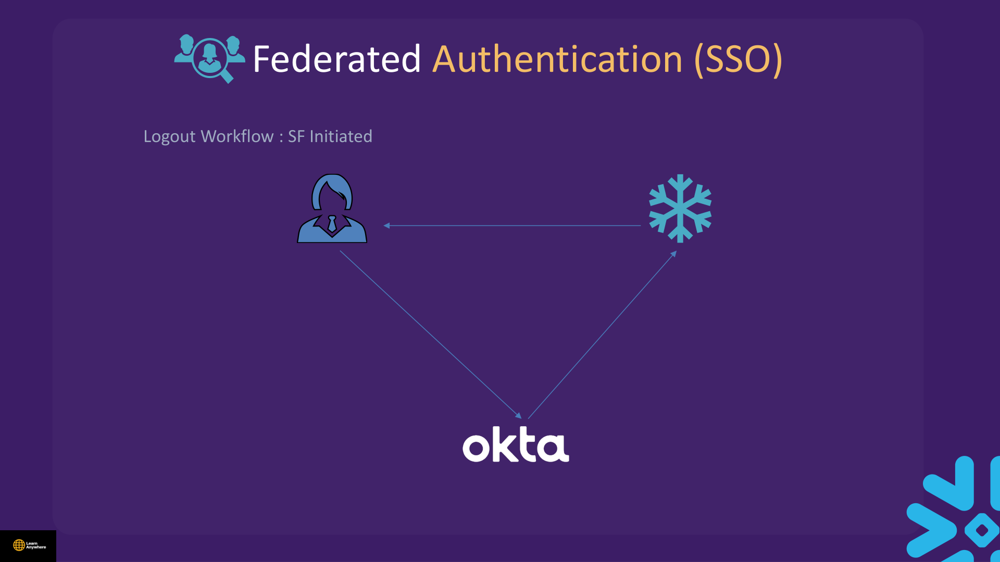
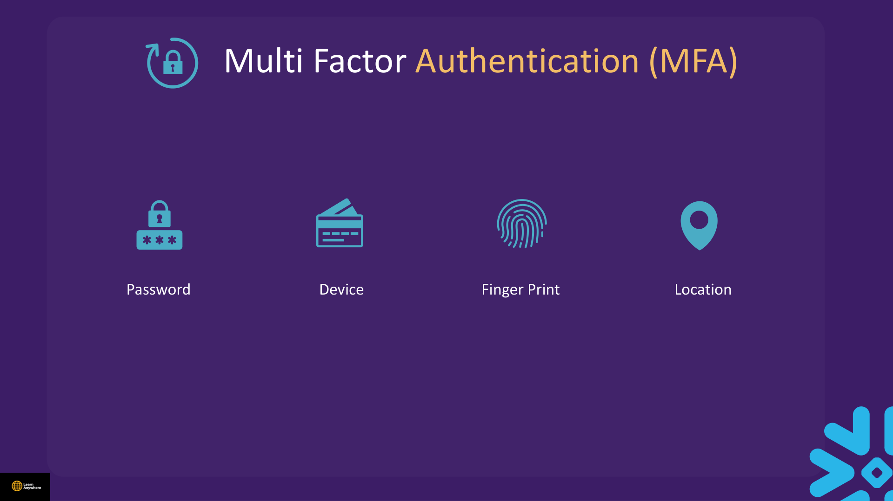
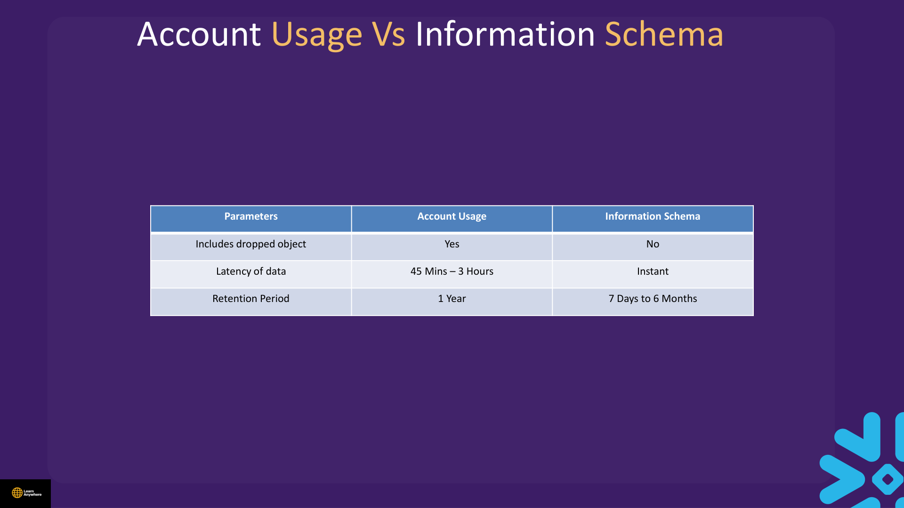
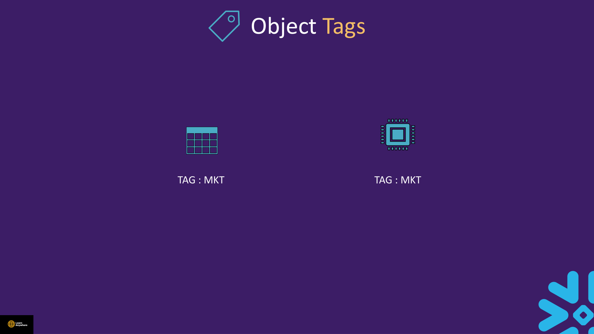

Lectures in this section
Every lecture below links to the notes that cover it.
- Security Overview 1:45
- Data Encryption 5:46
- Network Policies and External Access 6:35
- [Demo] Network Policies 6:02 Security Authentication and Authorization/Network Policy.txt
- Private Connectivity 2:01
- IAM Authentication Policies 1:48
- IAM Federated Auth 3:38
- IAM Multi Factor Authentication (MFA) 2:31
- [Demo] IAM Multi Factor Authentication (MFA) 3:41 Security Authentication and Authorization/MFA Unenroll.txt
- IAM Key Pair Authentication 1:18
- IAM OAuth 4:36
- Security Integration 2:25
- Authentication Best Practices 2:02
- Demo : Information Schema and Account Usage 6:26 Security Authentication and Authorization/Inform and Account Schema.txt
- Demo : Access History 3:29 Security Authentication and Authorization/Access History.txt
- Object Tag Concept 1:59
- Demo : Object Tag 7:10 Security Authentication and Authorization/Object Tag.txt
- Quiz
Security Overview
Snowflake security spans two layers: authentication (proving identity) and authorisation (what that identity may do). Role grants and policies — covered in Section 10 — answer authorisation. This section covers encryption, network boundaries, identity methods, and audit tooling.
Data protection
Encryption at rest and in transit; optional Tri-Secret Secure / customer-managed keys on Business Critical.
Network & identity
Network policies, PrivateLink, MFA, SSO, key-pair, OAuth, authentication policies.
Audit & classification
Login history, Access History, object tags for cost and sensitivity labelling.
Data Encryption
Snowflake encrypts all data by default. You do not need to configure column encryption for standard table storage — micro-partitions are encrypted in cloud object storage.
| Layer | Mechanism | Notes |
|---|---|---|
| At rest | AES-256 on stored data (tables, stages, internal files) | Included in all editions; keys managed by Snowflake or customer (Business Critical+) |
| In transit | TLS 1.2 for client connections and inter-service traffic | All JDBC/ODBC/Python/Snowsight sessions use HTTPS |
| Tri-Secret Secure | Combination of customer-managed key (CMK) and Snowflake-managed key (SMK) forming a composite master key | Business Critical or higher; revoking the CMK makes data undecryptable — three levels of protection: encryption, authentication, and control |
| Stage encryption | ENCRYPTION = (TYPE = 'SNOWFLAKE_SSE') or stronger |
Required for some document-AI features on stages |
Periodic key rotation
Snowflake automatically rotates encryption keys every 30 days. After 30 days, active keys are retired. Rotation happens without downtime or action on your part.
Periodic rekeying
Periodic rekeying (Enterprise edition or higher) is manually enabled. It destroys retired keys after one year and ensures data is re-encrypted with current technology — stronger than rotation alone when you need to eliminate old key material entirely.
Network Policies & External Access
Network policies restrict access to Snowflake based on IP address using an allowed list and a blocked list. SECURITYADMIN or higher (e.g. ACCOUNTADMIN) can create them. They can be set at account, security integration, or user level — only one policy per account, per security integration, and per user. Precedence (most specific wins): user → security integration → account. The blocked list takes precedence over the allowed list.
- Supports CIDR notation — e.g.
192.168.1.0/24covers192.168.1.0through192.168.1.255. - Supports only IPv4 addresses — not IPv6.
- Modern approach: define network rules and add them to a network policy.
Course file: Security Authentication and Authorization/Network Policy.txt
ALLOWED_IP_LIST on CREATE NETWORK POLICY — modern deployments also use network rules referenced by policies. IPv6 is not supported in classic allow lists.
CREATE NETWORK POLICY corp_access
ALLOWED_IP_LIST = ('203.0.113.0/24')
BLOCKED_IP_LIST = ('203.0.113.50');
-- Test on one user before account-wide enforcement
ALTER USER <username> SET NETWORK_POLICY = corp_access;
-- Account-wide (ACCOUNTADMIN) — ensure your current IP is in ALLOWED_IP_LIST first
ALTER ACCOUNT SET NETWORK_POLICY = corp_access;
-- Recovery if locked out (from an allowed IP or via support):
ALTER ACCOUNT UNSET NETWORK_POLICY;
ALTER USER <username> UNSET NETWORK_POLICY;
DESC NETWORK POLICY corp_access;
SHOW PARAMETERS LIKE 'NETWORK_POLICY' IN USER <username>;Private Connectivity
Private connectivity (AWS PrivateLink, Azure Private Link, Google Cloud Private Service Connect) routes traffic between your VPC/VNet and Snowflake without traversing the public internet. Use when compliance or security policy forbids public endpoints.
- Requires Business Critical edition or higher for full private-link patterns (exam-level expectation).
- You still authenticate users normally — PrivateLink changes the network path, not RBAC.
- Pair with network policies for defence in depth when hybrid access exists.
- External stages and outbound integrations may need separate egress controls — distinct from inbound login policies.
Authentication Policies
Authentication policies centralise MFA requirements, password rules, and allowed methods. Attach at account or user level similar to network policies. They complement — do not replace — role-based authorisation in Section 10.
CREATE AUTHENTICATION POLICY require_mfa
MFA_AUTHENTICATION_METHODS = ('PASSWORD')
MFA_ENROLLMENT = 'REQUIRED'
MFA_POLICY = (ALLOWED_METHODS = ('PASSKEY', 'TOTP'));
ALTER ACCOUNT SET AUTHENTICATION POLICY = require_mfa;
-- Or per user: ALTER USER <username> SET AUTHENTICATION POLICY = require_mfa;Federated Authentication (SSO)
In a federated environment, user authentication is separated from user access through one or more external entities that independently authenticate user credentials. Snowflake is the service provider (SP). The identity provider (IdP) creates and maintains user credentials and profile information and authenticates users for SSO access to the SP. Snowflake supports most SAML 2.0-compliant vendors as an IdP.
- SSO handles authentication; Snowflake roles still control authorisation.
- Configure via security integrations (see below).
- SCIM can provision users/roles from the IdP automatically.
- Three distinct workflows: Snowflake-initiated login, IdP-initiated login, and Snowflake-initiated logout.

Multi-Factor Authentication (MFA)
MFA adds factors beyond a password — device, fingerprint, location — to prove identity. Snowflake MFA is powered by the Duo Security service, managed by Snowflake, and not enabled by default.

- Recommended for every user with the
ACCOUNTADMINrole. - Aimed at Snowsight but fully supported for SnowSQL and JDBC/ODBC drivers.
- Methods include TOTP and passkeys per authentication policy.
- SnowSQL with MFA-in-password:
<mfa_code>-<password>when enabled.
ALTER USER … SET DISABLE_MFA = TRUE) is an emergency troubleshooting step only — re-enrol MFA immediately after. Combine with authentication policies carefully; a misconfigured policy can block legitimate logins. Keep a break-glass ACCOUNTADMIN with known recovery path.
Course file: Security Authentication and Authorization/MFA Unenroll.txt
SHOW MFA METHODS FOR USER <username>;
CREATE AUTHENTICATION POLICY require_mfa_policy
MFA_AUTHENTICATION_METHODS = ('PASSWORD')
MFA_ENROLLMENT = 'REQUIRED'
MFA_POLICY = (ALLOWED_METHODS = ('PASSKEY', 'TOTP'));
-- Emergency only — re-enable MFA after troubleshooting
ALTER USER <username> SET DISABLE_MFA = TRUE;
-- SnowSQL login format when MFA-in-password enabled:
-- <MFA_CODE>-<PASSWORD>Key-Pair Authentication
Snowflake supports key-pair authentication for enhanced security as an alternative to basic authentication. Minimum 2048-bit RSA key pair. Assign public key to user; client signs JWT. Common for SnowSQL, drivers, Snowpipe, and automation. Prefer key-pair over long-lived passwords for service accounts.
Setup workflow
- Generate the private key (OpenSSL).
- Generate the public key (OpenSSL).
- Store the private and public keys securely.
- Assign the public key to a Snowflake user.
- Verify the user's public key fingerprint.
- Configure the Snowflake client to use key-pair authentication.
- Human users — password + MFA, SSO, or passkey depending on policy.
- Service users — non-interactive; prefer key-pair or OAuth.
- Snowpipe — key-pair + JWT for automated ingestion.
- Snowflake SQL API — OAuth or key-pair (no PUT/GET).
-- Generate key pair off-box (openssl or Snowflake docs workflow)
ALTER USER etl_service SET RSA_PUBLIC_KEY='<your_public_key_pem_body>';
-- Disable password auth when key-pair enforced via authentication policyOAuth
OAuth lets applications obtain tokens for Snowflake access without embedding passwords. Typical for the Snowflake SQL API, custom apps, and some driver configurations. Tokens are short-lived compared to static passwords.
- Configure an OAuth security integration with redirect URI, client ID/secret from your IdP or Snowflake-native OAuth app.
- Scopes and role restrictions can limit what the token may do.
- Pair with least-privilege roles — OAuth proves identity, roles still govern data access.
Security Integrations
A security integration is a Snowflake object that stores trust settings for external identity or API systems — SAML SSO, OAuth, SCIM provisioning, and API authentication.
CREATE SECURITY INTEGRATION … TYPE = SAML2— federated SSO.TYPE = OAUTH— programmatic OAuth clients.- SCIM integrations automate user/role lifecycle from corporate IdP.
- Network policy can attach at integration level (precedence between user and account).
Trust Center
Snowsight scanner recommendations: enforce MFA, limit ACCOUNTADMIN count, find stale users (90+ days), detect over-privileged roles.
Authentication Best Practices
- Enforce MFA for all human users with powerful roles; never share
ACCOUNTADMINcredentials. - Use SSO + SCIM for corporate users; key-pair or OAuth for service accounts.
- Test network policies on one user before account-wide enforcement; document recovery steps.
- Rotate keys and OAuth secrets; disable unused users promptly.
- Prefer authentication policies over ad-hoc per-user exceptions.
- Audit login history regularly; investigate failed attempts and stale accounts.
- Combine encryption, network controls, RBAC, and masking — no single control is sufficient.
INFORMATION_SCHEMA vs ACCOUNT_USAGE
The Snowflake Information Schema (also called the data dictionary) is a set of system-defined views and table functions providing metadata about objects in your account. It is based on the SQL-92 ANSI Information Schema with Snowflake-specific additions. Account Usage provides views showing object metadata and usage metrics for the account, split into ACCOUNT_USAGE and READER_ACCOUNT_USAGE. Both are similar, but they differ in scope, latency, retention, and whether dropped objects appear.
Information Schema characteristics
- Read-only schema available for every database you create.
- Maintains data about all database objects and some account-level information as views.
- Provides table functions for historical and usage data across your account.
- Requires privileges on underlying objects or functions.

| Parameter | ACCOUNT_USAGE | INFORMATION_SCHEMA |
|---|---|---|
| Location | Shared SNOWFLAKE database, ACCOUNT_USAGE schema |
Inside each database you create |
| Includes dropped objects | Yes | No |
| Latency of data | 45 minutes – 3 hours | Instant |
| Retention period | 1 year | 7 days to 6 months |
| Query style | Views (e.g. account_usage.login_history) |
Views + table functions (e.g. TABLE(information_schema.login_history())) |
| Privileges | Typically restricted to admin/audit roles | Need privileges on underlying objects / functions |
Course file: Security Authentication and Authorization/Inform and Account Schema.txt
USE DATABASE <YOUR_DB>;
SELECT *
FROM TABLE(INFORMATION_SCHEMA.LOGIN_HISTORY(RESULT_LIMIT => 100));
USE DATABASE SNOWFLAKE;
USE SCHEMA ACCOUNT_USAGE;
SELECT *
FROM ACCOUNT_USAGE.LOGIN_HISTORY
ORDER BY EVENT_TIMESTAMP DESC
LIMIT 100;information_schema.login_history as a view — it is a table function. You must use TABLE(information_schema.login_history()).
Access History
Access History maintains a history of read and write operations — invaluable for compliance auditing and data-lineage investigations. Lives in SNOWFLAKE.ACCOUNT_USAGE.ACCESS_HISTORY. Requires Enterprise edition or higher.
- Stores data on source columns and objects accessed both directly and indirectly (through views).
- Used for compliance auditing — who touched which columns, not just what SQL text ran.
- Key columns:
QUERY_ID,QUERY_START_TIME,USER_NAME,DIRECT_OBJECTS_ACCESSED,BASE_OBJECTS_ACCESSED,OBJECTS_MODIFIED,OBJECT_MODIFIED_BY_DDL,POLICIES_REFERENCED. - Latency: like other ACCOUNT_USAGE views — 45 minutes to 3 hours; not real-time.
Course file: Security Authentication and Authorization/Access History.txt
SELECT query_id, query_start_time, user_name,
direct_objects_accessed, base_objects_accessed
FROM SNOWFLAKE.ACCOUNT_USAGE.ACCESS_HISTORY
WHERE user_name = '<YOUR_USERNAME>'
ORDER BY query_start_time DESC
LIMIT 50;QUERY_HISTORY tells you what SQL ran. ACCESS_HISTORY tells you which tables/columns that SQL actually touched — including through views.
Organization & Accounts
An organization is a first-class Snowflake object that links the accounts owned by the org. It simplifies account management and billing, replication and failover/failback, and Snowflake secure data sharing and administration tasks. Manage it with the ORGADMIN role — which has access to account properties but not to account data.
An account identifier uniquely identifies a Snowflake account in the form:
<account_identifier>.snowflakecomputing.comORGADMIN sees org-wide account metadata and usage — not the data inside individual accounts. Account-level admin roles (ACCOUNTADMIN, etc.) operate inside one account.
Object Tags
Object tags are schema-level objects that attach metadata as a key-value pair to other Snowflake objects such as tables, views, and columns. Requires Enterprise edition or higher.

Tags help monitor sensitive data for compliance, discovery, protection, and resource usage. They work in both centralised and decentralised data governance models. Tags can be queried to monitor usage, facilitate governance operations, and ensure compliance.
- Limited to 50 unique tags per object; each tag supports up to 5,000 allowed values.
- Tags inherit based on the Snowflake securable object hierarchy.
- Tag assignments can be replicated within databases.
- Optional
ALLOWED_VALUESrestrict what can be assigned (e.g. cost centreMKTorADVT). - Chargeback via
SNOWFLAKE.ACCOUNT_USAGE.TAG_REFERENCESandQUERY_ATTRIBUTION_HISTORY.
Course file: Security Authentication and Authorization/Object Tag.txt
Object Tag.txt inserts duplicate primary-key id 1 twice — use unique ids in your lab table.
CREATE TAG IF NOT EXISTS cost_center
ALLOWED_VALUES 'MKT', 'ADVT'
COMMENT = 'Chargeback tag';
CREATE TAG IF NOT EXISTS sensitivity
ALLOWED_VALUES 'PUBLIC', 'INTERNAL', 'CONFIDENTIAL';
ALTER WAREHOUSE study_gov_lab_wh SET TAG cost_center = 'MKT';
ALTER TABLE gov_tag_demo SET TAG cost_center = 'MKT';
ALTER TABLE gov_tag_demo SET TAG sensitivity = 'CONFIDENTIAL';
SELECT SYSTEM$GET_TAG_ALLOWED_VALUES('COST_CENTER');
SHOW TAGS;
SELECT tag_name, tag_value, object_name
FROM SNOWFLAKE.ACCOUNT_USAGE.TAG_REFERENCES
WHERE object_database = 'STUDY_GOV_LAB'
ORDER BY tag_name;Cleanup
ALTER WAREHOUSE IF EXISTS study_gov_lab_wh UNSET TAG cost_center;
ALTER TABLE IF EXISTS gov_tag_demo UNSET TAG cost_center;
ALTER TABLE IF EXISTS gov_tag_demo UNSET TAG sensitivity;
DROP TAG IF EXISTS cost_center;
DROP TAG IF EXISTS sensitivity;Common Mistakes
- Locking yourself out with account network policy — maintain break-glass IP or user exemption.
- Embedding passwords in worksheets or using course demo passwords.
- Using ACCOUNT_USAGE for “right now” monitoring — latency is too high; use INFORMATION_SCHEMA functions or Query History UI.
- Assuming SSO replaces role grants — users still need Snowflake roles.
- Disabling MFA without re-enrolment plan — treat as temporary emergency only.
- Storing real IPs from lab scripts — use placeholders in documentation.
Interview questions
Try to answer each one before opening it.
How does Snowflake encrypt data at rest and in transit, and what is the key hierarchy?Fundamentals
At rest, Snowflake encrypts all stored data — tables, stages, internal files — with AES-256 in cloud object storage. In transit, all client connections use TLS 1.2+. Snowflake manages encryption keys by default. On Business Critical and VPS, Tri-Secret Secure adds a customer-held key fragment with the cloud KMS — Snowflake alone cannot decrypt if the customer revokes their key. Dynamic data masking is separate — it hides values at query time, not bytes on disk.
How does OAuth differ from password and key-pair authentication?Comparison
OAuth lets applications obtain short-lived tokens for Snowflake access without embedding passwords — typical for the Snowflake SQL API, custom apps, and some driver configurations. Configure via an OAuth security integration with redirect URI and client credentials from your IdP or a Snowflake-native OAuth app. Scopes and role restrictions limit what the token may do. Key-pair suits non-interactive service accounts; OAuth suits apps with user consent flows. Both prove identity — Snowflake roles still govern data access.
How do network policies work at account versus user level, and what is the lockout risk?Scenario
Network policies restrict inbound login traffic by IPv4 CIDR allow/block lists. Precedence (most specific wins): user → security integration → account. Blocked IPs override allowed ranges. Classic policies use embedded ALLOWED_IP_LIST; modern deployments may reference reusable network rules instead. An account-level policy blocks every login from non-allowed IPs — if you omit your own IP, you lock yourself out. Always test on a single user first, keep a break-glass admin path from an allowed IP, and know recovery: ALTER ACCOUNT UNSET NETWORK_POLICY.
What is private connectivity and how does it differ from network policies?Fundamentals
Private connectivity (AWS PrivateLink, Azure Private Link, Google Cloud Private Service Connect) routes traffic between your VPC/VNet and Snowflake without traversing the public internet. It changes the network path, not RBAC — you still authenticate normally. Typically requires Business Critical or higher for full private-link patterns. Network policies filter which IPs may connect; PrivateLink removes public exposure entirely. Pair both when hybrid access exists.
What are authentication policies and how do they relate to MFA?Security
Authentication policies centralise MFA requirements, password rules, and allowed methods. Attach at account or user level. Example: CREATE AUTHENTICATION POLICY require_mfa MFA_ENROLLMENT = 'REQUIRED' MFA_POLICY = (ALLOWED_METHODS = ('PASSKEY', 'TOTP')). They complement RBAC — proving identity is separate from authorising data access. A misconfigured policy can block legitimate logins; test carefully and keep break-glass recovery paths.
What happens when a user loses their MFA device, and how does an admin unenrol them?Scenario
An admin with sufficient privileges can inspect enrolled methods with SHOW MFA METHODS FOR USER <username>. Emergency recovery uses ALTER USER <username> SET DISABLE_MFA = TRUE — this is troubleshooting only; re-enrol MFA immediately after. SnowSQL with MFA-in-password uses <mfa_code>-<password> when enabled. Combine with authentication policies carefully — disabling MFA without a re-enrolment plan leaves the account exposed.
Why is key-pair authentication preferred for service accounts, and how do you rotate keys?Fundamentals
Service accounts are non-interactive — key-pair auth uses a minimum 2048-bit RSA pair where the client signs a JWT; no password to leak or rotate manually in scripts. Assign with ALTER USER etl_service SET RSA_PUBLIC_KEY='…'. Rotation: generate a new pair, set RSA_PUBLIC_KEY_2, migrate clients, then clear the old key. Pair with authentication policies to disable password auth entirely for service users. Common for SnowSQL, drivers, Snowpipe, and the SQL API.
How does SSO/federated authentication work with Snowflake roles and SCIM?Comparison
Snowflake is the service provider; your corporate IdP (Okta, Azure AD, etc.) is the identity provider via SAML 2.0 configured through a security integration. SSO handles authentication only — users must still be granted Snowflake roles for authorisation. SCIM provisions users and role assignments from the IdP automatically, reducing manual user lifecycle work. SSO login success does not imply data access without role grants.
What is a security integration object?Fundamentals
A security integration stores trust settings for external identity or API systems inside Snowflake. Types include SAML2 for federated SSO, OAUTH for programmatic token access, and SCIM for automated user/role provisioning. Network policies can attach at integration level (precedence between user and account). OAuth integrations define redirect URIs, client credentials, and scopes — tokens are short-lived compared to static passwords.
What are the key differences between INFORMATION_SCHEMA and ACCOUNT_USAGE?Gotcha
INFORMATION_SCHEMA lives inside each database you create — uses views and table functions (e.g. TABLE(information_schema.login_history())), fresher for recent activity, shorter retention (~7 days for query history). ACCOUNT_USAGE is in the shared SNOWFLAKE database — account-wide views with longer retention (~365 days for query history) but delayed latency (often 45 min – 3 hours). ACCOUNT_USAGE typically requires admin/audit roles. Common trap: querying information_schema.login_history as a plain view — it is a table function and requires TABLE(…) syntax.
How does access history differ from query history?Gotcha
QUERY_HISTORY records the SQL text that ran. ACCESS_HISTORY (Enterprise+, in SNOWFLAKE.ACCOUNT_USAGE) records which objects and columns were actually read or written — including indirect access through views. Key columns: DIRECT_OBJECTS_ACCESSED, BASE_OBJECTS_ACCESSED, OBJECTS_MODIFIED, POLICIES_REFERENCED. Like other ACCOUNT_USAGE views, latency is hours — not suitable for real-time monitoring. Do not query information_schema.login_history as a plain view — it is a table function.
How do object tags support classification and cost attribution?Scenario
Object tags are schema-level metadata attached to warehouses, databases, schemas, tables, columns, and more. Define allowed values: CREATE TAG cost_center ALLOWED_VALUES 'MKT', 'ADVT'. Up to 50 tags per object. Tags inherit in the object hierarchy for discovery. For chargeback, query SNOWFLAKE.ACCOUNT_USAGE.TAG_REFERENCES and QUERY_ATTRIBUTION_HISTORY. Tag at warehouse/database level for cost; column level for fine-grained sensitivity labelling. Tag inheritance helps downstream objects pick up parent tags automatically.
What is the difference between key rotation and periodic rekeying?Comparison
Periodic key rotation is automatic — Snowflake rotates encryption keys every 30 days and retires active keys after rotation. No action required. Periodic rekeying (Enterprise+) is manually enabled. It destroys retired keys after one year and re-encrypts data with current technology. Rotation retires keys on a schedule; rekeying eliminates old key material entirely and ensures data uses the latest encryption standards.
What is an organization in Snowflake and what can ORGADMIN do?Fundamentals
An organization is a first-class Snowflake object linking accounts owned by the org. It simplifies account management, billing, replication/failover, and secure data sharing administration. ORGADMIN manages org-level operations — create accounts, view all accounts and regions via SHOW ORGANIZATION ACCOUNTS and SHOW REGIONS, check usage across the org — but has access to account properties, not account data. Account identifier format: <account_identifier>.snowflakecomputing.com.
Hands-on practice
Run these in a trial account on an X-Small warehouse with AUTO_SUSPEND = 60. Clean up when you finish.
-
Compare login history from INFORMATION_SCHEMA (table function) and ACCOUNT_USAGE. Run both queries and note scope and row timestamps.
INFORMATION_SCHEMA returns recent logins for the current database context via a table function. ACCOUNT_USAGE returns account-wide history with potentially older rows and delayed ingestion — timestamps may lag by up to a few hours.
Show solutionSQL
USE DATABASE <YOUR_DB>; SELECT event_timestamp, user_name, client_ip, reported_client_type FROM TABLE(INFORMATION_SCHEMA.LOGIN_HISTORY(RESULT_LIMIT => 20)) ORDER BY event_timestamp DESC; USE DATABASE SNOWFLAKE; USE SCHEMA ACCOUNT_USAGE; SELECT event_timestamp, user_name, client_ip, reported_client_type FROM ACCOUNT_USAGE.LOGIN_HISTORY ORDER BY event_timestamp DESC LIMIT 20; -
Lockout warning: Before any network policy work, look up your current IPv4 address and confirm it will be in the allow list. Create policy
corp_access, attach it to your user only (not account-wide), verify login still works, then unset it.Login succeeds while the policy is attached because your current IP is in
ALLOWED_IP_LIST. AfterALTER USER … UNSET NETWORK_POLICY, the user has no network restriction. Never set account-wide policy until user-level test passes.Show solutionSQL
-- Replace <YOUR_IPV4_CIDR> with your actual IPv4, e.g. '203.0.113.45/32' CREATE OR REPLACE NETWORK POLICY corp_access ALLOWED_IP_LIST = ('<YOUR_IPV4_CIDR>') BLOCKED_IP_LIST = (); ALTER USER <your_user> SET NETWORK_POLICY = corp_access; -- Confirm you can still run queries, then: ALTER USER <your_user> UNSET NETWORK_POLICY; DROP NETWORK POLICY IF EXISTS corp_access; -
Create tags
cost_centerandsensitivity, attach them to warehousestudy_gov_lab_whand tablegov_tag_demo, then queryTAG_REFERENCES.SHOW TAGSlists both tags.TAG_REFERENCESshowscost_center = 'MKT'andsensitivity = 'CONFIDENTIAL'on the tagged objects. Use unique primary-key values ingov_tag_demo— the course file inserts duplicate id 1 twice.Show solutionSQL
CREATE OR REPLACE WAREHOUSE study_gov_lab_wh WAREHOUSE_SIZE = XSMALL AUTO_SUSPEND = 60; CREATE TAG IF NOT EXISTS cost_center ALLOWED_VALUES 'MKT', 'ADVT' COMMENT = 'Chargeback tag'; CREATE TAG IF NOT EXISTS sensitivity ALLOWED_VALUES 'PUBLIC', 'INTERNAL', 'CONFIDENTIAL'; CREATE OR REPLACE TABLE gov_tag_demo (id INT PRIMARY KEY, payload STRING); INSERT INTO gov_tag_demo VALUES (1, 'alpha'), (2, 'beta'); ALTER WAREHOUSE study_gov_lab_wh SET TAG cost_center = 'MKT'; ALTER TABLE gov_tag_demo SET TAG cost_center = 'MKT'; ALTER TABLE gov_tag_demo SET TAG sensitivity = 'CONFIDENTIAL'; SELECT tag_name, tag_value, object_name FROM SNOWFLAKE.ACCOUNT_USAGE.TAG_REFERENCES WHERE object_name IN ('STUDY_GOV_LAB_WH', 'GOV_TAG_DEMO') ORDER BY tag_name; -
Memorise the three ACCOUNT_USAGE vs INFORMATION_SCHEMA comparison rows: dropped objects, latency, and retention. Query both login history sources and note which shows older rows and which responds instantly.
ACCOUNT_USAGE may include dropped-object metadata and retains up to 1 year with 45 min–3 hr latency. INFORMATION_SCHEMA is instant but excludes dropped objects and retains 7 days to 6 months.
Show solutionSQL
-- INFORMATION_SCHEMA: instant, no dropped objects USE DATABASE <YOUR_DB>; SELECT event_timestamp, user_name FROM TABLE(INFORMATION_SCHEMA.LOGIN_HISTORY(RESULT_LIMIT => 5)); -- ACCOUNT_USAGE: delayed, includes dropped objects, 1-year retention USE DATABASE SNOWFLAKE; SELECT event_timestamp, user_name FROM ACCOUNT_USAGE.LOGIN_HISTORY LIMIT 5; -
Run a SELECT on
gov_tag_demo, then query ACCESS_HISTORY for your username. Finish by cleaning up all objects from this section.ACCESS_HISTORY may take hours to show the query — if empty, that is expected latency, not failure. Cleanup unsets tags before drops.
Show solutionSQL
SELECT * FROM gov_tag_demo; SELECT query_id, query_start_time, user_name, direct_objects_accessed FROM SNOWFLAKE.ACCOUNT_USAGE.ACCESS_HISTORY WHERE user_name = '<YOUR_USERNAME>' ORDER BY query_start_time DESC LIMIT 10; -- Cleanup ALTER WAREHOUSE IF EXISTS study_gov_lab_wh UNSET TAG cost_center; ALTER TABLE IF EXISTS gov_tag_demo UNSET TAG cost_center; ALTER TABLE IF EXISTS gov_tag_demo UNSET TAG sensitivity; DROP TABLE IF EXISTS gov_tag_demo; DROP WAREHOUSE IF EXISTS study_gov_lab_wh; DROP TAG IF EXISTS cost_center; DROP TAG IF EXISTS sensitivity;
Recap
- Encryption at rest (AES-256) and in transit (TLS 1.2) are default.
- Key rotation: automatic every 30 days; rekeying: manual, Enterprise+, destroys keys after 1 year.
- Tri-Secret Secure (Business Critical+): CMK + SMK composite key; revoking CMK blocks decryption.
- Network policies: IPv4 CIDR allow/block; one policy per account/integration/user; blocked list wins.
- PrivateLink keeps traffic off the public internet; distinct from RBAC.
- MFA: Duo-powered, not default; required for ACCOUNTADMIN; works in SnowSQL and drivers.
- SSO: SP vs IdP; SF-initiated, IdP-initiated, and SF-initiated logout workflows.
- Key-pair: 2048-bit RSA minimum; six-step setup; preferred for service accounts.
- Organization links accounts; ORGADMIN manages properties, not data.
- INFO_SCHEMA: instant, no dropped objects, 7 days–6 months; ACCOUNT_USAGE: 45 min–3 hr latency, 1 year, includes dropped objects.
- Access History (Enterprise+): column-level read/write audit;
OBJECT_MODIFIED_BY_DDLcolumn. - Object tags (Enterprise+): schema-level, 50/object, inherit down hierarchy, replicate within DBs.